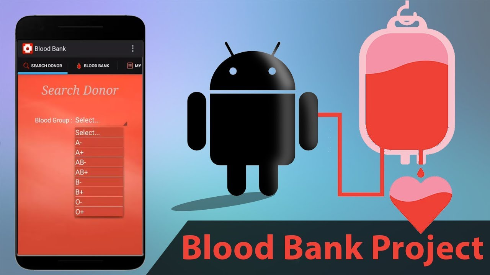
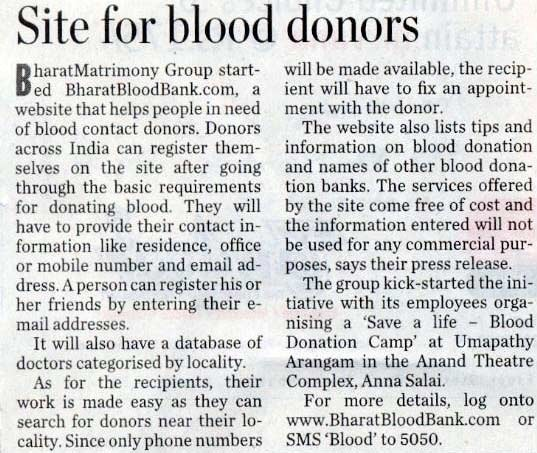
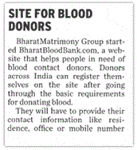
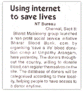
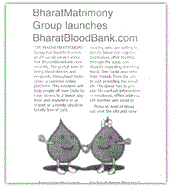

Media Center
Online Coverage
Using internet to save lives (News Today)
Bharat Matrimony group launched a non-profit social service initiative Bharat Blood Bank. com by organising 'save a life' blood donation camp at Umpathy Arangam, here yesterday. The donors throughout the country
Site for blood donors (The Hindu)
BharatMatrimony Group started BharatBloodBank.com, a website that helps people in need of blood contact donors. Donors across India can register themselves on the site after going through the basic requirements for donating blood

The Hindu Metro,Plus Chennai,Sep 12, 2005
The Hindu Metro , Plus Coimbatore , Sep 12, 2005
News Today, plus Chennai, Sep 8, 2005........
Mid Day , Sep 29, 2005